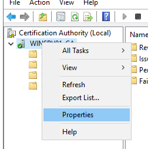
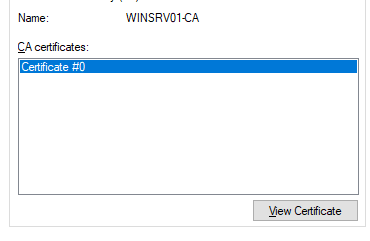
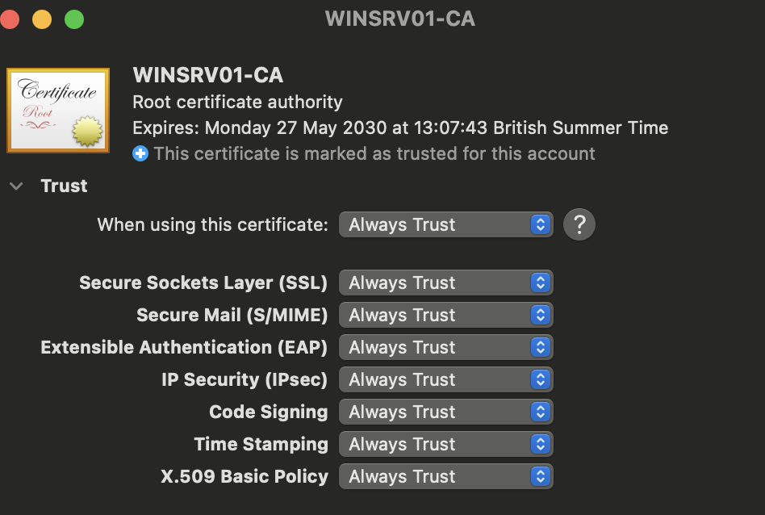
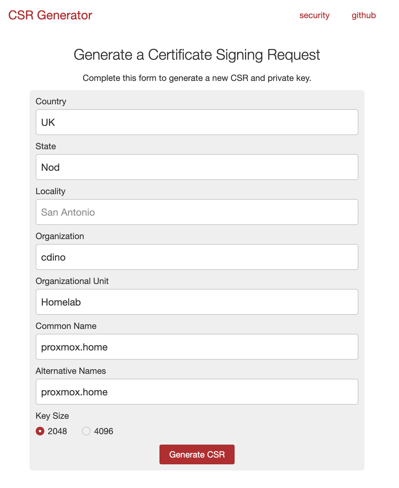
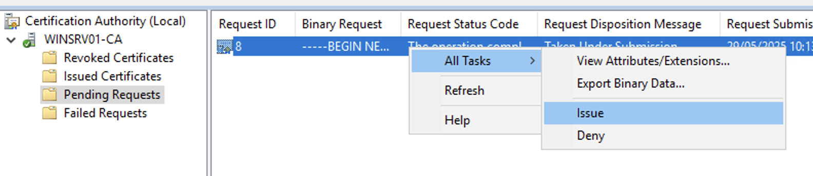
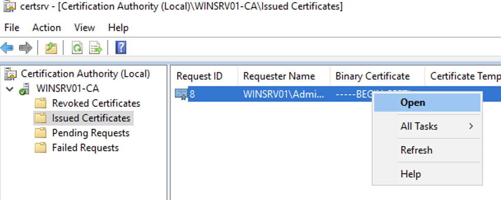
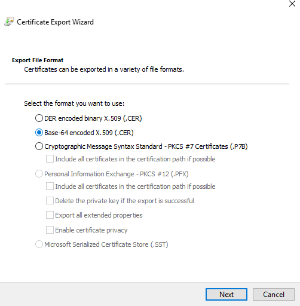
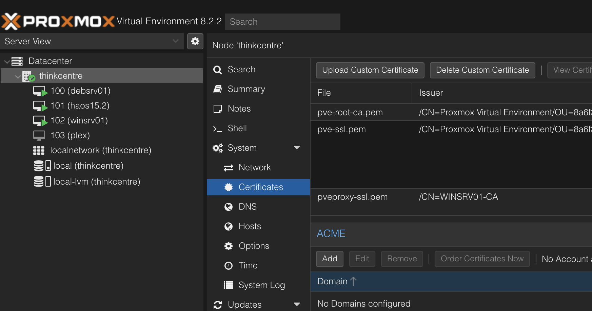
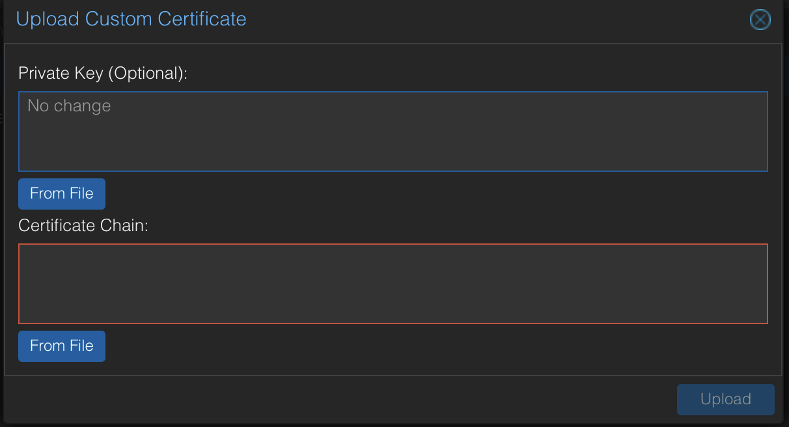
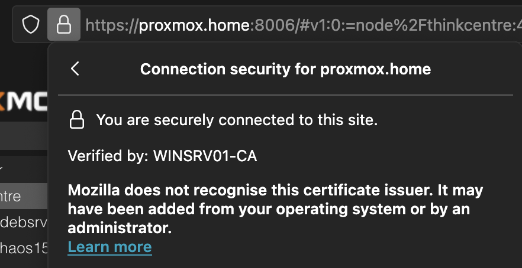

HTTPS for Promox (or, HOWTO: using a Windows CA)
CAs are fun!
29/05/2025
Introduction
I’ve recently been working on my home lab and wanted to try my hand at running a Certificate Authority (CA). I found plenty of tutorials online about setting up a Windows CA - both domain-joined and standalone - but none of them covered what to do after you’ve set it up.
This post covers what to do after finishing the setup of your CA, using the example of enabling HTTPS for a Proxmox server.
Set Up CA
There are plenty of tutorials online about setting up CAs on Windows servers, so I won’t waste bandwidth repeating them. I opted for a standalone CA rather than one that’s part of a domain—if you want to do the same, check out this article:
Step-by-step guide on setting up a standalone root CA
Installing the Root Certificate
For our client to trust any certificates generated by our CA, we’ll need to install the root certificate on our systems.
- Open certsrv.
- Right-click your server, then select Properties. 
- Click View Certificate. 
- Go to Details → Copy to File..., then follow the wizard to export your certificate.
- Transfer the newly generated file to your client. I did this via a shared network drive.
Then to install it:
On macOS: Double-click the file to install the root CA. Then, in Keychain Access, right-click the certificate, choose Get Info, open the Trust menu, and set it to Always Trust.
On Windows: Follow this guide to install the certificate: Import root certificates on Windows
Generate CSR
Next, we generate a Certificate Signing Request (CSR) to have it signed by our CA.
If you’re comfortable with command-line tools, you can use OpenSSL or the likes. If you prefer an easier method, use a site like csrgenerator.com — this is what I did!
Important: Be sure to include Subject Alternative Names (SANs) in your CSR. Many articles overlook this, but Firefox gave me errors when I omitted it. Including SANs fixed the issue. Maybe this was just a firefox thing.
Save your CSR and private key as two separate files. I named them proxmox.csr and proxmox.key.
- Transfer your CSR to your CA server.
- In the Certification Authority console:
- Right-click your server → All Tasks → Submit a new request...
- Select your CSR file (you may need to change the file type filter to “All Files”).

- Go to Pending Requests.
- Right-click your certificate → All Tasks → Issue 
- Then go to Issued Certificates — you should see your newly issued certificate.
- Right-click it and select Open. 
- Go to Details → Copy to File....
- In the wizard, make sure to select Base-64 encoded X.509 (.CER). 
Installing on Proxmox
- Navigate to your Proxmox instance and log in. For convenience, you can do this from your CA, or transfer the certificate and key to another client.
- Select your server → Certificates. 
- Click "Upload Custom Certificate".
- Upload your private key file and newly generated certificate. 
- Click Upload.
That’s it!
Note: If you previously added a certificate exception for your Proxmox server in your browser, you’ll want to remove it now.
Conclusion
A pretty straightforward process once you’ve done it once! Now you can enjoy a nice padlock in your URL bar. 🔒